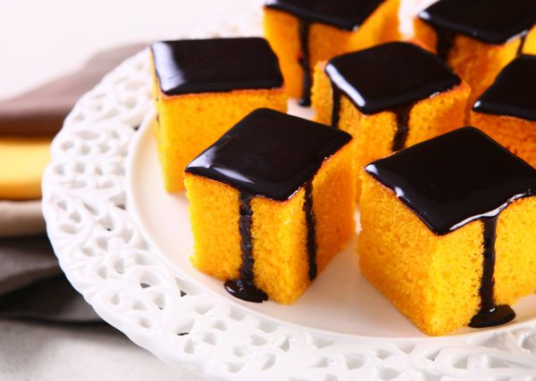
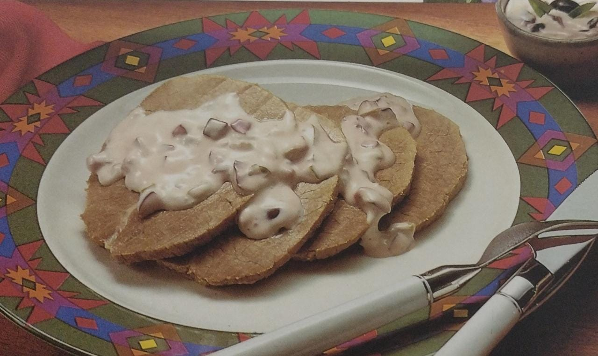
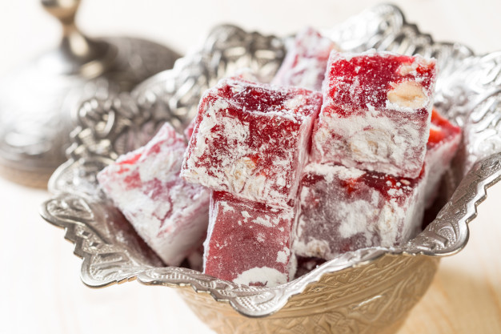
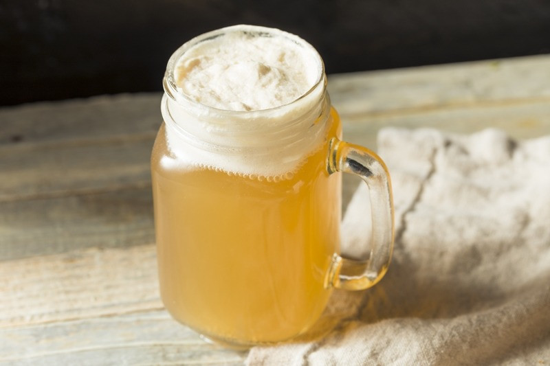
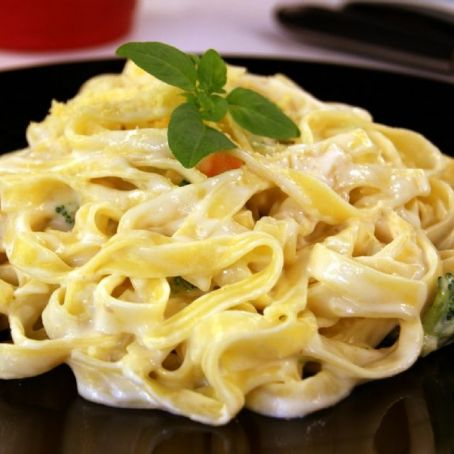

Bom Apetite
Bom Apetite

Receitas

Bolo de Cenoura
Ingredientes:
- 3 cenouras médias raladas
- 1/2 xícara de chá de óleo
- 4 gemas
- 1 xícara de chá de farinha de trigo
- 1/2 xícara de chá de amido de milho
- 1 colher de sopa de fermento em pó
- 3 colheres de sopa de adoçante em pó
- 4 claras em neve
- 150 gramas de chocolate dietético em tablete picado
Modo de preparo:
- Bata no liquidificador as cenouras, o óleo e as gemas.
- Acrescente os ingedientes secos e misture bem.
- Junte as claras mexendo delicadamente.
- Coloque numa fôrma pequena untada e enfarinhada.
- Leve ao forno médio preaquecido por cerca de 35 minutos e reserve.
- Amoleça o chocolate em banho-maria e cubra o bolo reservado.

Frappuccino
Ingredientes:
- 1 copo de café coado concentrado
- 1 colher de sopa de açúcar
- 1 colher de sopa de chocolate em pó
- 1 copo de leite integral gelado
- Chantilly
Modo de preparo:
- Despeje o café em forminhas de gelo e leve ao congelador.
- Depois que o café estiver congelado, em um liquidificador, bata-os com o chocolate em pó, leite integral e açúcar até ficar homogêneo.
- Para finalizar, despeje a calda de chocolate ou caramelo em um copo e sirva a bebida com chantilly no topo.

Lagarto com molho de azeitona
Ingredientes:
- 1 kg de lagarto
- Sal a gosto
- 1 xícara de chá de maionese de sua preferencia
- 1/2 xícara de chá de azeitona verde picada
- 1/2 xícara de chá de azeitona preta picada
- 3 colheres de sopa de pepino em conserva picado
- 1 colher de sopa de molho inglês
Modo de preparo:
- Numa panela de pressão, cozinhe o lagarto com 1/2 litro de água e o sal em fogo médio, por 40 minutos.
- Deixe esfriar e embrulhe em papel alumínio, leve a geladeira até o dia seguinte.
- Corte em fatias bem finas e reserve.
- Misture bem todos os ingredientes para o molho, sirva sobre as fatias reservadas.

Manjar Turco - Crônicas de Nárnia
Ingredientes:
- 1 xícara de água
- 5 colheres de sopa de amido de milho
- 2 xícaras de açúcar
- 1/2 xícara de suco de laranja natural
- 2 colheres de sopa de xarope de romã
- Açúcar de confeiteiro
Modo de preparo:
- Em um panela, colocar para aquecer a água.
- Quando a água estiver quente, adicionar o açúcar e o suco de laranja, mexer até o açúcar derreter.
- Enquanto o açúcar derrete, misturar o restante da água com o amigo de milho.
- Quando o açúcar estiver todo derretido, juntar o amido de milho com a calda e deixar engrossar até ficar com textura de gel (cerca de 15 minutos), mexendo sempre para que não grude no fundo da panela.
- Desligar o fogo e adicionar o xarope de romã
- Forrar uma forma pequena com papel filme e despejar a mistura e esperar esfriar por no mínimo 3 horas em temperatura ambiente
- Polvilhar em uma tábua açúcar de confeiteiro e colocar o manjar turco
- Cortar em cubos e empanar no açúcar de confeiteiro

Cerveja amanteigada - Harry Potter
Ingredientes:
- 500 ml de sorvete de creme ou baunilha
- 100 gr de manteiga em temperatura ambiente
- 1 xícara de chá de açúcar mascavo
- 1/2 colher de café de de cravo em pó
- Nóz moscada e gengibre em pó á gosto
- 1/2 colher de café de canela em pó
- 1 garrafa de espumante
Modo do preparo:
- Misture bem a manteiga com o açúcar e os condimentos, acrescente o sorvete e misture.
- Leve ao freezer até congelar.
- Na hora de servir, coloque 2 a 3 colheres da mistura congelada em um copo, esquente o espumante até começar a ferver, e despeje em cima, depois mexa.

Macarrão ao molho branco
Ingredientes:
- 1 pacote de macarrão
- 1 lata de creme de leite
- 1 colher de sopa de amido de milho
- 1 e 1/2 xícara de chá de leite morno
- 1/2 colher de sopa de sal
- 1 colher de sopa de manteiga
Modo de preparo:
- Derreta a manteiga, junte a farinha de trigo e mexa até dourar.
- Abaixe o fogo e coloque aos poucos o leite, mexendo fortemente.
- Cozinhe por alguns minutos até adquirir consistência.
- Tempere com o sal, coloque o creme de leite, misture bem e aqueça sem deixar ferver
- Cozinhe o macarrão em água fervente com sal até ficar al dente e coloque o molho.
Sorvete de iogurte

Ingredientes:
- Iogurte natural
- Frutas de sua preferência
- Granola
- Mel ou melado (opcional)
Modo de preparo:
- Em uma forma, coloque um pedaço de papel manteiga
- Em seguida, coloque o iogurte e espalhe
- Adicione as frutas e a granola e se quiser o mel
- Leve ao congelador por no mínimo 2 horas, depois corte e está pronto